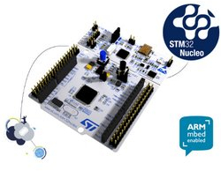

We had “Hands-on VeriFast with STM32 microcontroller” on 静的コード解析の会 at Tokyo.
This hands-on purpose is that non-professional person for embedded programming understands the development method and verification using VeriFast. The VeriFast is a verifier for single-threaded and multithreaded C language programs annotated with preconditions and postconditions written in separation logic. And VeriFast is easy to use with the graphical IDE.
The hands-on was going as following steps:
All of participants have had VeriFast verification platform, and feel the verification way of VeriFast for ChibiOS/RT on STM32 microcontroller. STMicroelectronics kindly gives me their MCU board NUCLEO-F091RC, for free. Thanks a lot!
We are planning same hands-on on OSC2017 at Hokkaido. Let’s propagandize verification method by VeriFast for embedded application!
blog comments powered by